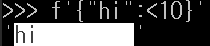
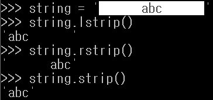
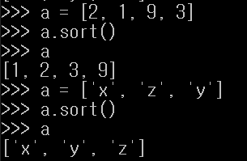
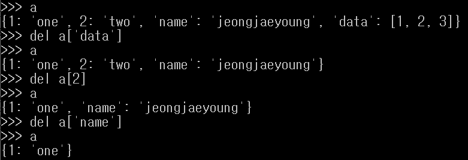
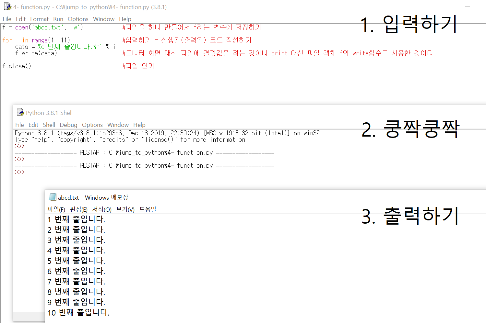

0. 들어가기
1. python의 특징
1. 간결하다.
2. 배우기 쉽다.
3. C, C++와 찰떡궁합이다. #프로그램의 전반적인 뼈대는 python으로 만들고,
빠른 실행 속도가 필요한 부분은 C로 만들어서 파이썬 프로그램 안에 포함시킨다.
4. 대화형 인터프리터 언어이다. #한 줄씩 소스 코드를 해석해서 그때그때 실행해 결과를 바로 확인한다.
2. python의 용도
1. 웹 프로그래밍
2. 데이터베이스 프로그래밍
3. 데이터 분석
Ⅰ. 재료 구하기
1. 데이터 표현방식(데이터 타입)
① 숫자
1. 정수
2. 실수
3. 8진수
0o 또는 0O을 써주면 된다 < /p>
4. 16진수
0x 또는 0X를 써주면 된다
② 문자열
1. 문자열 기본
(0) 기본 : 작은따옴표(' ') 또는 큰따옴표(" ")를 쓰면 된다.
(1) 작은따옴표(')와 큰따옴표(")를 문자열에 넣고 싶을 때
기본 방법 : "블라블라'블라블라" 또는 '블라블라"블라블라' 형태로 적으면 된다.
추가적 방법 : 이스케이프 문자 활용(\', \")
(2) 여러 줄을 변수에 넣고 싶을 때
기본방법 : 작은따옴표 3개('''블라블라''') 또는 큰따옴표 3개("""블라블라""") 형태로 적으면 된다.
추가적 방법 : 이스케이프 문자 활용(\n)
cf) 이스케이프 문자 정리
\' : 작은따옴표(')를 그대로 표현
\" : 큰따옴표(")를 그대로 표현
\\ : 역슬래시(\)를 그대로 표현
\n : enter를 표현
\t : tap을 표현
2. 문자열 연산하기
(1) 문자열 더하기
(2) 문자열 곱하기
(3) 문자열 길이 구하기
띄어쓰기도 세주는 구나
3. 문자열 인덱싱과 슬라이싱
문자열 인덱싱(indexing = 가리키기)이란 문자열 안의 특정한 값을 뽑아내는 것
문자열 슬라이싱(slicing = 잘라내기)이란
문자열의 일부분을 잘라내서 뽑아내는 것
변수[a:b] -> a <= 변수 <=b 까지의 문자열을 보여줌
a를 쓰지 않으면 처음부터
b를 쓰지 않으면 끝까지 출력한다.
4. 문자열 포매팅
(0) 기본
문자열 포매팅이란 문자열 안에 자주 바꾸는 것만 특정 값으로 삽입하는 방법이다.
포매팅의 재료(포멧 코드)는 다음과 같다.
%d : 정수(integer)
%f : 실수(floating-point)
%o : 8진수
%x : 16진수
%c : 문자 1개(character)
%s : 문자열(string)
%% : % 그 자체
(1) 포맷코드와 숫자 사용하기

(2) format 함수를 이용한 숫자 포멧팅
1) 기본
기본값으로는 {인덱스 값}을 적으면 되는데, {변수} 형태로도 가능하다.
주의. {변수} 형태에서는 미리 변수를 설정해 놓는 것은 에러난다.
f를 이용한 문자열 포멧팅을 이용해서 숫자가 아닌 문자로 받아서 해결하셈.
0은 인덱싱 번호를 말하는 듯
:< 왼쪽 정렬
:> 오른쪽 정렬
:^ 가운데 정렬
4) 소숫점 표현
5) {}문자 표현하기
(3) f를 이용한 문자열 포멧팅
1) 기본
문자열 앞에 f를 붙이면 문자열도 포멧팅이 가능하다.

3) 공백 채우기4) 소숫점 표현
5) {}문자 표현하기
* 문자열 관련 함수(문자열 내장함수)
(1) count() : 문자 갯수 세기
(2.1) find() : 위치 알려주기 1
내가 찾고자 하는 문자가 처음 나타난 위치를 알려주고, 없다면 -1을 반환한다.
(2.2) index() : 위치 알려주기 2
내가 찾고자 하는 문자가 처음 나타난 위치를 알려주고, 없다면 오류를 발생시킨다.
(3) join() : 문자열 삽입
문자열 사이사이에 특정 문자를 삽입해준다. 튜플과 리스트에서도 사용 가능하다.
(4) upper() : 소문자를 대문자로 바꾸기
(4.2) lower() : 대문자를 소문자로 바꾸기
(5) lstrip() : 왼쪽 공백 지우기 : 문자열 중 가장 왼쪽에 있는 한 칸 이상의 연속된 공백들을 모두 지운다.
rstrip() : 오른쪽 공백 지우기: 문자열 중 가장 오른쪽에 있는 한 칸 이상의 연속된 공백들을 모두 지운다.
strip() : 양쪽 공백 지우기

(6) replace() : 문자열 바꾸기
형태는 replace(바꾸게 될 문자열, 바꿀 문자열)이다.
(7) split() : 문자열 나누기
split() 함수 안에 들어가 있는 것을 기준으로 문자열을 나눈다.
아무것도 없으면 공백을 기준으로 나눈다.
이렇게 나누어진 값들은 각각 리스트에 들어간다.
(8) str() : () 안에 들어가 있는 정수나 실수를 문자열의 형태로 바꾸어준다.
③ 리스트
1. 리스트 기본
2. 리스트 연산하기
(1) 더하기
(2) 곱하기
(3) 수정하기
(4) 삭제하기

3. 리스트 인덱싱과 슬라이싱
(1) 리스트 인덱싱
(2) 리스트 슬라이싱
* 리스트 관련 함수
(2) insert() : 리스트에 요소 삽입
insert(x, y)이면 x번째 위치에 요소y를 삽입한다.
(3) remove() : 리스트 요소 제거
remove(x)이면 첫 번째로 나오는 요소x를 삭제한다.
(4) pop() : 리스트 요소 끄집어내기
pop()은 리스트의 맨 마지막 요소를 출력하고 삭제한다.
pop(x)는 리스트의 x번째 요소를 출력하고 삭제한다.

(6) reverse() : 리스트 뒤집기
순서를 뒤집는다.
(8) index() : 위치 반환
요소 중 하나를 입력하면 그 놈의 위치를 알려준다.
(9) count() : 리스트에 포함된 요소 x의 개수 세기
count(x)는 리스트 안에 요소x가 몇 개 있는 지 알려준다.
(10) extend() : 리스트에 포함된 요소 x의 개수 세기
extend(x)에서 x에는 리스트만 올 수 있고, 기존 리스트에 x리스트를 추가한다.

④ 튜플
튜플은 리스트와 비슷하다. 하지만 튜플은 값을 바꿀 수 없다.(리스트는 변경 가능)
프로그램이 실행되는 동안 값이 변하지 않아야하면 튜플을 써야한다.
1개의 요소만 가져도 요소 뒤에 ,를 붙여야한다.
()을 생략해도 상관없다.
나머진 리스트와 비슷하다
2. 연산하기
3. 인덱싱과 슬라이싱
⑤ 딕셔너리
1. 딕셔너리 기본
형태 : { key1 : value1, key2 : value2, key3 : value3 }
딕셔너리는 순차적으로 해당 요솟값을 구하지 않고, key값을 통해 value값을 얻는다.
참고로 비어있는 딕셔너리는 a = dict()로 만들 수 있다.
주의사항1. key값이 중복되면 마지막에 만들어진 것을 제외하곤 전부 무시된다.
주의사항2. key값에 리스트는 쓸 수 없고, 튜플은 가능하다. 물론 딕셔너리도 변할 수 있으므로 key값에 오지 못한다.
리스트, 딕셔너리는 변할 수 있고, 튜플은 변할 수 없는 특성을 가지고 있기 때문에 그런 것이다.
value값에는 리스트, 튜플, 딕셔너리가 오는 것이 모두 가능하다.
2. 딕셔너리 연산, 추가, 수정, 삭제하기
추가하기 : 딕셔너리_이름[추가할 key값] = [추가할 value값]
삭제하기 : del 딕셔너리_이름[삭제할_key값]

3. 딕셔너리 자료뽑기 #key값을 이용해 value값 알아내기 ≒인덱심
딕셔너리_이름[조사할_key값]
그럼 value값이 나온다.
딕셔너리 자료 뽑기가 가지는 리스트나 튜플과의 자료뽑기(인덱싱)과의 차이점은
key값을 조사해서 value값을 찾아주는 것이지, 데이터의 위치, 순서로 인덱싱하지 않는다.
딕셔너리는 순서가 없기 때문이다. 이건 집합 자료형과 같은 성질이다.
.get()을 사용해서 없는 것을 찾으려고 하면 None을 반환하는 차이가 있다. 여기서 None은 거짓이라는 뜻이다.
* 딕셔너리 관련 함수
dict_keys와 dict_values객체는 리스트처럼 쓸 수 있는데, 리스트 고유의 내장함수인 append, insert, pop, remove, sort같은 것들은 쓰기 못한다.
(1.1) .keys() #key만 모아 리스트 만들기
(1.2) .values() #values만 모아 리스트 만들기
(1.3) .items() #key, value쌍으로 모아 튜플 만들기
(2) clear #key, value 모두 지우기
(3) in #딕셔너리 안에 내가 찾는 key값이 있는지 확인하기
⑥ 집합
1. 집합 기본
집합 자료형은 set키워드를 사용해 만든다.
잡합 자료형은
1. 중복을 허용하지 않고,
2. 순서가 없다
는 특징을 가지고 있다.
중복을 허용하지 않는 set의 특징은 자료형의 중복을 제거하기 위한 필터 역할로 종종 사용하기도 한다.
2. 집합 추가, 수정, 연산, 삭제하기
(1) 집합 추가하기
.add() 함술를 사용하거나
.update() 함수를 이용하면 된다.
(3) 집합 연산하기
1) 합집합
| 기호를 사용하거나
.union() 함수를 이용하면 된다.
2) 차집합
- 기호를 사용하거나
.difference() 함수를 사용하면 된다.
3) 교집합
& 기호를 사용하거나
.intersection() 함수를 사용하면 된다.
(4) 집합 삭제하기
3. 집합 자료 뽑기 ≒인덱싱
순서가 없기 때문에 인덱싱을 못한다. 굳이 하고 싶다면 리스트나 튜플로 바꾸어서 하면 된다.
데이터 표현방식(데이터 타입) 정리
리스트, 튜플은 순서가 있어서 인덱싱 개념이 있고, 딕셔너리, 집합은 순서가 없어서 인덱싱 개념이 없다.
⑦ 불리언
1. 불리언 기본
숫자형, 문자열, 리스트, 튜플, 딕셔너리의 값이 비어 있으면 False가 된다.
None은 거짓을 뜻한다.
2. 불리언 연산하기
bool() 이라는 함수 사용하기 a is b : a랑 b랑 같은지 비교하고 결과값을 T/F로 반환한다.
2. 변수, 상수
변수
① 변수 기본
C나 Java에서는 변수를 만들 때 자료형을 직접 지정해야 하지만,
파이썬은 변수에 저장된 값을 스스로 판단하여 자료형을 저장하기 때문에 편리하다.
② 변수를 만든다는 것은 메모리에 저장한다는 것
파이썬에서 변수는 객체를 가리키는 것이다. 객체란 우리가 지금껏 보아 온 자료형과 같은 것을 의미하는 말이다.
변수가 생기면 무슨일이 일어나는 것일까?
a = [1, 2, 3]이라는 리스트를 만들어주면
[1, 2, 3]의 값을 가지는 리스트 자료형(객체)이 메모리에 생기게 되고, 변수 a는 [1, 2, 3]리스트가 저장된 메모리의 주소를 가리키게 된다.
1. 같은 곳에 저장하기
2. 다른이름으로 저장하기 #[:] #copy모듈
a랑 b가 각각 독립되게 저장하려면 두 가지 방법이 있다. 마치 다른 이름으로 저장하기랑 비슷하다.
1. [:] 사용하기
2. copy모듈 사용하기
상수
3. 연산자
기본 연산자
+ : 더하기
- : 빼기
* : 곱하기
/ : 나누기
// : 몫 구하기
% : 나머지 구하기
** : 제곱
비교 연산자
x < y
x > y
x == y
x != y
x >= y
x <= y
비교연산자는 불린을 반환한다.
논리 연산자
x or y : x와 y 둘 중 하나만 참이어도 True
x and y : 둘 다 참이어야 True
not x : x가 거짓이면 True
파이썬만의 연산자
x in 문자열 : 문자열 안에 x가 있으면 True
x not in 문자열 : 문자열 안에 x가 없으면 True
x in 리스트 : 리스트 안에 x가 있으면 True
x not in 리스트 : 리스트 안에 x가 없으면 True
x in 튜플 : 튜플 안에 x가 있으면 True
x not in 튜플 : 튜플 안에 x가 없으면 True
4. 함수
① 파이썬 회사가 만든 함수 #내장함수
-
abs()
-
divmod(a, b)
-
pow(x, y)
-
round(a[, b])
-
sum(iterable)
-
all()
-
any()
-
chr()
-
ord()
-
dir()
-
enumerate()
-
eval()
-
filter()
-
id()
-
input()
-
int(x, [radix])
-
instance(x, y) #인스턴스와 클래스의 관계 # instance(instance, class)
-
len(x)
-
list(x)
-
tuple(x)
-
map(x, y) # map(function, iterable)
-
max(iterable)
-
min(iterable)
-
oct(x)
-
hex(x)
-
open(파일_이름, [파일_열기_모드])
-
range([a,] b [,c])
-
sorted(iterable))
-
str(object)
-
type(object)
-
zip(*iterable)
절댓값을 돌려주는 함수이다.
>>> abs(-1)
1 a를 b로 나눈 몫과 나머지를 튜플 형태로 반환한다.
>>> divmod(5,3)
(1, 2) x의 y제곱을 출력한다.
>>> pow(2,3)
8
b의 자리에서 a를 반올림한 값을 출력해준다.
>>> round(1,2)
1
>>> round(3.141592, 2)
3.14 입력받은 리스트나 튜플의 모든 요소의 합을 돌려준다.
>>> sum([1, 2, 3])
6
>>> sum((1, 2, 3))
6
반복 가능한 자료형(for문으로 그 값을 출력할 수 있는 것 : 문자열, 리스트, 튜플, 딕셔너리, 집합 등)을 인수로 받으며
모든 인수가 참이면 True를,
하나의 인수라도 거짓이라면 False를 돌려준다.
>>> all([1, 2, 3])
True
>>> all([1, 2, 3, 0])
False
반복 가능한 자료형(for문으로 그 값을 출력할 수 있는 것 : 문자열, 리스트, 튜플, 딕셔너리, 집합 등)을 인수로 받으며
하나의 인수라도 참이면 True를,
모든 인수가 거짓이면 False를 돌려준다.
>>> any((1, 2, 3))
True
>>> any((0, None, ""))
False
>>> 아스키코드 값을 입력받고 해당 문자를 출력한다.
>>> chr(101)
'e'
>>> chr(15)
'\x0f'
>>> chr(201)
'É'
>>> chr(197)
'Å' 문자를 입력받고 해당 문자의 아스키 코드 값을 반환한다.
>>> ord('1')
49
>>> ord('a')
97 객체 자체적으로 가지고 있는 변수나 함수를 보여준다.
>>> dir(1)
['__abs__', '__add__', '__and__', '__bool__', '__ceil__', '__class__', '__delattr__', '__dir__', '__divmod__', '__doc__', '__eq__', '__float__', '__floor__', '__floordiv__', '__format__', '__ge__', '__getattribute__', '__getnewargs__', '__gt__', '__hash__', '__index__', '__init__', '__init_subclass__', '__int__', '__invert__', '__le__', '__lshift__', '__lt__', '__mod__', '__mul__', '__ne__', '__neg__', '__new__', '__or__', '__pos__', '__pow__', '__radd__', '__rand__', '__rdivmod__', '__reduce__', '__reduce_ex__', '__repr__', '__rfloordiv__', '__rlshift__', '__rmod__', '__rmul__', '__ror__', '__round__', '__rpow__', '__rrshift__', '__rshift__', '__rsub__', '__rtruediv__', '__rxor__', '__setattr__', '__sizeof__', '__str__', '__sub__', '__subclasshook__', '__truediv__', '__trunc__', '__xor__', 'as_integer_ratio', 'bit_length', 'conjugate', 'denominator', 'from_bytes', 'imag', 'numerator', 'real', 'to_bytes']
>>> dir('a')
['__add__', '__class__', '__contains__', '__delattr__', '__dir__', '__doc__', '__eq__', '__format__', '__ge__', '__getattribute__', '__getitem__', '__getnewargs__', '__gt__', '__hash__', '__init__', '__init_subclass__', '__iter__', '__le__', '__len__', '__lt__', '__mod__', '__mul__', '__ne__', '__new__', '__reduce__', '__reduce_ex__', '__repr__', '__rmod__', '__rmul__', '__setattr__', '__sizeof__', '__str__', '__subclasshook__', 'capitalize', 'casefold', 'center', 'count', 'encode', 'endswith', 'expandtabs', 'find', 'format', 'format_map', 'index', 'isalnum', 'isalpha', 'isascii', 'isdecimal', 'isdigit', 'isidentifier', 'islower', 'isnumeric', 'isprintable', 'isspace', 'istitle', 'isupper', 'join', 'ljust', 'lower', 'lstrip', 'maketrans', 'partition', 'replace', 'rfind', 'rindex', 'rjust', 'rpartition', 'rsplit', 'rstrip', 'split', 'splitlines', 'startswith', 'strip', 'swapcase', 'title', 'translate', 'upper', 'zfill']
>>> dir([1, 2])
['__add__', '__class__', '__contains__', '__delattr__', '__delitem__', '__dir__', '__doc__', '__eq__', '__format__', '__ge__', '__getattribute__', '__getitem__', '__gt__', '__hash__', '__iadd__', '__imul__', '__init__', '__init_subclass__', '__iter__', '__le__', '__len__', '__lt__', '__mul__', '__ne__', '__new__', '__reduce__', '__reduce_ex__', '__repr__', '__reversed__', '__rmul__', '__setattr__', '__setitem__', '__sizeof__', '__str__', '__subclasshook__', 'append', 'clear', 'copy', 'count', 'extend', 'index', 'insert', 'pop', 'remove', 'reverse', 'sort']
>>> dir((1, 2))
['__add__', '__class__', '__contains__', '__delattr__', '__dir__', '__doc__', '__eq__', '__format__', '__ge__', '__getattribute__', '__getitem__', '__getnewargs__', '__gt__', '__hash__', '__init__', '__init_subclass__', '__iter__', '__le__', '__len__', '__lt__', '__mul__', '__ne__', '__new__', '__reduce__', '__reduce_ex__', '__repr__', '__rmul__', '__setattr__', '__sizeof__', '__str__', '__subclasshook__', 'count', 'index']
>>> dir({1 : 'a'})
['__class__', '__contains__', '__delattr__', '__delitem__', '__dir__', '__doc__', '__eq__', '__format__', '__ge__', '__getattribute__', '__getitem__', '__gt__', '__hash__', '__init__', '__init_subclass__', '__iter__', '__le__', '__len__', '__lt__', '__ne__', '__new__', '__reduce__', '__reduce_ex__', '__repr__', '__reversed__', '__setattr__', '__setitem__', '__sizeof__', '__str__', '__subclasshook__', 'clear', 'copy', 'fromkeys', 'get', 'items', 'keys', 'pop', 'popitem', 'setdefault', 'update', 'values']
>>> dir(set([1, 2]))
['__and__', '__class__', '__contains__', '__delattr__', '__dir__', '__doc__', '__eq__', '__format__', '__ge__', '__getattribute__', '__gt__', '__hash__', '__iand__', '__init__', '__init_subclass__', '__ior__', '__isub__', '__iter__', '__ixor__', '__le__', '__len__', '__lt__', '__ne__', '__new__', '__or__', '__rand__', '__reduce__', '__reduce_ex__', '__repr__', '__ror__', '__rsub__', '__rxor__', '__setattr__', '__sizeof__', '__str__', '__sub__', '__subclasshook__', '__xor__', 'add', 'clear', 'copy', 'difference', 'difference_update', 'discard', 'intersection', 'intersection_update', 'isdisjoint', 'issubset', 'issuperset', 'pop', 'remove', 'symmetric_difference', 'symmetric_difference_update', 'union', 'update']
>>> dir(True)
['__abs__', '__add__', '__and__', '__bool__', '__ceil__', '__class__', '__delattr__', '__dir__', '__divmod__', '__doc__', '__eq__', '__float__', '__floor__', '__floordiv__', '__format__', '__ge__', '__getattribute__', '__getnewargs__', '__gt__', '__hash__', '__index__', '__init__', '__init_subclass__', '__int__', '__invert__', '__le__', '__lshift__', '__lt__', '__mod__', '__mul__', '__ne__', '__neg__', '__new__', '__or__', '__pos__', '__pow__', '__radd__', '__rand__', '__rdivmod__', '__reduce__', '__reduce_ex__', '__repr__', '__rfloordiv__', '__rlshift__', '__rmod__', '__rmul__', '__ror__', '__round__', '__rpow__', '__rrshift__', '__rshift__', '__rsub__', '__rtruediv__', '__rxor__', '__setattr__', '__sizeof__', '__str__', '__sub__', '__subclasshook__', '__truediv__', '__trunc__', '__xor__', 'as_integer_ratio', 'bit_length', 'conjugate', 'denominator', 'from_bytes', 'imag', 'numerator', 'real', 'to_bytes']
enumerate = 열거하다
순서가 있는 자료형(문자열, 리스트, 튜플)을 입력받아 인덱스 값을 포함하는 enumerate객체를 돌려준다.
enumerate 함수는 for문과 자주 사용된다. 그러면 자료형의 현재 순서(index)와 그 값을 쉽게 알 수 있기 때문이다.
>>> for i, vocabulary in enumerate(['a', 'b', 'c']):
... print( i, vocabulary )
...
0 a
1 b
2 c
실행가능한 문자열을 입력받아 문자열을 실행한 결과값을 돌려주는 함수이다.
입력받은 문자열로 파이썬 함수나 클래스를 동적으로 실행시키고 싶을 때 사용한다.
>>> eval('1+1')
2
>>> eval("'hi'+'!'")
'hi!'
>>> eval('divmod(5,3)')
(1, 2)
첫 번째 인수로 함수 이름을,
두 번째 인수로 그 함수에 들어갈 반복 가능한 자료형을 받는다.
그리고 두 번째 인수가 첫 번째 인수인 함수에 입력되었을 때,
반환값이 True인 것만 묶어서(filtering해서) 출력한다.
#positive.py
def positive(x): #양수만 걸러서 True를, 음수는 False를 반환하는 함수
return x > 0
print(list(filter(positive, [1, -2, 3, 5, -10])))
#참고로 list(filter(lambda x: x > 0, [1, -2, 3, 5, -10]))으로 간단히 적을 수도 있음.
===========================================
[1, 3, 5]
객체를 입력받아 객체의 고유 주소 값(레퍼런스)을 돌려주는 함수이다.
메모리가 저장된 위치를 알려주는 것 같다.
>>> a = b = 1
>>> id(a)
1868949424
>>> id(b)
1868949424
>>> id(1)
1868949424
>>> id(x)
Traceback (most recent call last):
File "", line 1, in
NameError: name 'x' is not defined
input([prompt])는 사용자가 값을 입력할 수 있게 해주는 것이다.
참고로 [블라블라]는 대괄호 안의 내용은 생략가능하다는 관습적 표현이다.
입력받은 것은 문자열의 형태로 저장한다. 반환한다.
>>> a = input()
x
>>> a
'x'
>>> b = input('값을 입력하세요 :')
값을 입력하세요 :123
>>> b
'123'
소숫점이 있는 숫자, 문자열 형태의 숫자 등을 정수 형태로 반환하는 함수이다.
정수를 입력받으면 그대로 정수를 돌려준다.
int(x, [radix])는 radix 진수로 표현된 문자열 x를 10진수로 변환하여 돌려준다.
>>> int(1.1)
1
>>> int('1')
1
>>> int(1)
1
>>> int('11', 2)
3
>>> int('1A', 16)
26
첫 번째 인수(x)는 인스턴스,
두 번째 인수(y)는 클래스이다.
x가 y에서 생겨난 것이라면 True를, 아니라면 False를 반환한다.
>>> class something: pass #아무 기능이 없는 something이라는 클래스 생성
...
>>> a = something()
>>> isinstance(a, something)
True
>>> b = 1
>>> isinstance(b, something)
False x의 길이(요소의 전체 갯수)를 돌려주는 함수이다.
>>> len('abc')
3
>>> len([1, 2, 3, 4])
4
>>> len((1, 'a'))
2
>>> 반복 가능한 자료형 x를 리스트로 만들어 반환한다.
>>> list('abc')
['a', 'b', 'c']
>>> list([1, 2, 3])
[1, 2, 3]
>>> list((1, 2, 3))
[1, 2, 3]
>>> list(set([1, 2]))
[1, 2] 반복 가능한 자료형 x를 튜플로 만들어 반환한다.
>>> tuple('abc')
('a', 'b', 'c')
>>> tuple([1, 2, 3])
(1, 2, 3)
>>> tuple((1, 2, 3))
(1, 2, 3)
x에 함수가 들어가고,
y에 반복 가능한 자료형이 들어가면(for문 떠올리셈),
입력 받은 자료형의 각 요소(a)를
함수 f가 수행한 결과를 묶어서 돌려주는 기능이다.
>>> def two_times(x):
... return x*2
...
>>> list(map(two_times, [1, 2, 3, 4])) #참고로 list(map(lambda x: x * 2, [1, 2, 3, 4]))으로 간단히 적을 수도 있음.
[2, 4, 6, 8] 인수로 반복 가능한 자료형을 입력받고, 그 최댓값을 돌려준다.
>>> max([1, 2, 3])
3
>>> max('123python')
'y' 인수로 반복 가능한 자료형을 입력받고, 그 최솟값을 돌려준다.
>>> min([1, 2, 3])
1
>>> min('123python')
'1' 정수x를 입력받아 8진수 문자열로 바꾸어 반환한다.
>>> oct(8)
'0o10'
>>> oct(3)
'0o3' 정수를 입력 받아 16진수(hexadecimal)문자열로 변환하여 출력한다.
>>> hex(17)
'0x11'
>>> hex(32)
'0x20'
해당 파이썬 파일이 들어있는 폴더에 새로운 파일을 만든다.
.close()는 열려 있는 파일 객체를 닫아주는 역할을 한다.
.close()는 생략해도 되지만, 사용해서 열려 있는 파일을 직접 닫아주는게 좋다.
그래야 쓰기모드로 열였던 파일을 닫지 않고 다시 사용하려고 하면 오류가 발생하기 때문이다.
x = open("abc.txt", 'w')
f = open('binary_file', 'rb')
a = open('C:/abc/xyz.txt') # C:의 abc라는 폴더 안에 xyz.txt라는 파일이 만들어짐
a.close()
#파일 열기_모드
# r : 읽기모드로 파일 열기 - 파일을 읽기만 할 때 사용, 기존에 파일이 있으면 덮어씀. 이게 default값임
# w : 쓰기모드로 파일 열기 - 파일에 내용을 쓸 때 사용
# a : 추가모드로 파일 열기 - 파일의 마지막에 새로운 내용을 추가할 때 사용
# b : 바이너리 모드로 파일 열기 - w, r, a와 함께 사용된다.
a이상 b미만의 범위 값을 반복 가능한 객체로 만들어준다. c는 건너뛰는 스텝의 크기다.
주로 for문과 자주 사용된다.
>>> range(1)
range(0, 1)
>>> list(range(5))
[0, 1, 2, 3, 4]
>>> list(range(3, 5))
[3, 4]
>>> list(range(1, 10, 2))
[1, 3, 5, 7, 9]
>>> list(range(1, -10, -3))
[1, -2, -5, -8]
입력값을 정렬한 후 그 결과를 리스트로 출력한다.
리스트 자료형에도 sort함수가 있지만, 그것은 리스트 객체 그 자체를 정렬만 할 뿐 정렬된 결과를 보여주진 않는다.
>>> sorted([3, 1, 2])
[1, 2, 3]
>>> sorted(['a', 'c', 'b'])
['a', 'b', 'c']
>>> sorted('apple')
['a', 'e', 'l', 'p', 'p']
>>> sorted((43, 54, 23, 12))
[12, 23, 43, 54] 입력받은 객체를 문자열 형태로 출력해준다.
>>> >>> str(1)
'1'
>>> str('abc')
'abc'
>>> str('abc'.upper())
'ABC' 입력받은 객체의 자료형이 무엇인지 알려준다.
>>> type(1)
<class 'int'>
>>> type('a')
<class 'str'>
>>> type([1, 2])
<class 'list'>
>>> type((1, 2))
<class 'tuple'>
>>> type(set([1, 2]))
<class 'set'>
>>> type(open('abc', 'w'))
<class '_io.TextIOWrapper'> 동일한 갯수로 이루어진 자료형을 묶어주는 역할을 하는 함수이다.
>>> list(zip([1, 2, 3], [4, 5, 6]))
[(1, 4), (2, 5), (3, 6)]
>>> list(zip([1, 2], [3, 4], [5, 6]))
[(1, 3, 5), (2, 4, 6)]
>>> list(zip('abc', 'xyz'))
[('a', 'x'), ('b', 'y'), ('c', 'z')]
② 내가 만드는 함수
(0) 기본
형태수행할 문장1
수행할 문장2
...
return 출력값
매개변수(parameter : 일반적 값)는 함수에 입력으로 전달된 값을 받는 변수이고,
인수(arguments : 특정한 값)는 함수를 호출할 때 전달하는 실제 입력값을 말한다.
함수의 4가지 종류
1) lambda 사용하기
함수를 한 줄로 간단히 표현할 때 사용한다.
def를 사용할 정도로 복잡하지 않거나, def를 사용할 수 없는 곳에서 이용한다.
add = lambda a, b: a+b
result = add(1, 2)
print(result)
=================
3
>>>
(1) 입력 관련
1) 입력할 때 매개변수 지정하여 호출
매개변수를 지정하여 호출하면, 매개변수를 순서에 상관없이 사용할 수 있다.
2) 입력값이 몇 개일지 모를 때 *args **kwagrs
2.1) *args 튜플로 반환
매개변수 앞에 *을 붙이면, 입력값이 몇 개이든 상관없이 전부 모아 튜플로 만들어준다.*args는 관습적인 방식일 뿐, *abc이런 식으로 아무런 이름을 사용해도 상관 없다.
def add_all(*args):
result = 0
for i in args:
result = result + i
return result
>>> add_all(1, 2)
3
>>> add_all(1, 2, 3)
6
>>>
2.2) **kwargs 딕셔너리로 반환
매개변수 앞에 **을 붙이면, 입력값이 몇 개이든 상관없이 전부 모아 딕셔너리로 만들어준다.모든 입력값이 key=value 형태의 결과값이 딕셔너리에 저장된다.
def print_kwargs(**kwargs):
print(kwargs)
>>> print_kwargs(a = 1)
{'a': 1}
>>> print_kwargs(name = 'jeongjaeyoung', age = 25)
{'name': 'jeongjaeyoung', 'age': 25}
>>>
3) 입력할 때 매개변수에 초깃값 미리 설정하기
함수의 매개변수에 들어갈 값이 항상 변하는 것이 아닐 경우에는 함수의 초기값을 미리 설정해두면 유용하다.
def say_myself(name, age, man=True):
print('이름은 %s' % name)
print('나이는 %d살' % age)
if man:
print('남자입니다.')
else:
print('여자입니다.')
>>> say_myself('철수', 10)
이름은 철수
나이는 10살
남자입니다.
>>>
say_myself('철수', 10)이라고 하면 10이 어느 곳에 들어가야할 지 몰라서 에러가 나는 것이다.
def say_myself(name, man=True, age):
>>> def say_myself(name, man=True, age):
... print('이름은 %s' % name)
... print('나이는 %d살' % age)
... if man:
... print('남자입니다.')
... else:
... print('여자입니다.')
...
File "", line 1
SyntaxError: non-default argument follows default argument
>>>
4) 사용자가 직접 값을 입력 #input
사용자가 직접 입력하면, 컴퓨터는 그 입력값을 문자열로 취급하고 기억한다. C언어의 scanf_s랑 같은 것이다.
>>> a = input("아무것이나 입력하세요 :")
아무것이나 입력하세요 : 123 abc
>>> a
' 123 abc'
(2) 함수 내부에서 쿵짝쿵짝 관련
함수 안에서 사용하는 매개변수는 함수 안에서만 사용된다.
즉, 함수 바깥에 있는 변수는 함수 안에서 매개변수로 사용되지 않는다는 말이다.
file1.py와 file2.py는 완전히 같은 함수이다.
#file1.py
a = 1
def function(a):
a = a + 1
return a
print(a) #2가 아니라 1일 출력된다.
1
>>>
#file2.py
a = 1
def function(b):
b = b + 1
return b
print(a)
1
>>>
1) 함수 밖의 변수를 함수 안에 넣는 방법1
사실 함수 밖의 변수를 함수의 매개변수로 넣어준 것이다.a = 1
def function(a):
a = a + 1
return a
a = function(a) #a에 2가 들어간다
print(a)
=======================
2
>>>
2) 함수 밖의 변수를 함수 안에 넣는 방법2
global 변수를 쓰면 되나, 가급적 함수는 외부변수로부터 독립적인게 좋으므로 사용을 권장하진 않는다.a = 1
def function():
global a
a = a + 1
function()
print(a)
=======================
2
>>>
(3) 출력 관련
1) 출력값은 무조건 1개이다.
함수에서 return값이 여러개이면, 튜플로 만들어 뱉어낸다.
def add_and_sub(a, b):
return a+b, a-b
>>> add_and_sub(2, 1)
(3, 1)
>>>
def add_and_sub(a, b):
return a+b #실행되고 끝남
return a-b #실행 안 됨
>>> add_and_sub(2, 1)
3
>>>
def escape(a):
if a == 1:
return
else:
print('잘못 입력했어요.')
>>> escape(2)
잘못 입력했어요.
>>> escape(1)
>>>
광의의 함수 #파일로, 입력하고 쿵짝쿵짝 후 출력하기
(0) 기본

#f = open('abcd.txt', 'w')
#
#for i in range(1, 11):
# data = "%d 번째 줄입니다.\n" % i
# f.write(data)
#
#f.close()
# 간단하게 표현하기
with open('abcd.txt', 'w') as f:
for i in range(1, 11):
data = "%d 번째 줄입니다.\n" % i
f.write(data)
(1) 입력 관련
1) readline 함수 사용하기 #한 줄씩 넣기
2) readlines 함수 사용하기 #리스트의 요소로 넣기
lines에는 ["1 번째 줄입니다.", "2 번째 줄입니다.", ... ,"10 번째 줄입니다."]이 들어간다.
3) read 함수 사용하기
(2) 함수 안에서 쿵짝쿵짝 관련
(3) 출력 관련
③ 남이 만든 함수 #외장함수 #라이브러리
전 세계의 파이썬 사용자들이 만들어 놓은 유용한 프로그램을 모아 놓은 것이 파이썬 라이브러리이다.
1. sys
파이썬 인터프리터가 제공하는 변수와 함수를 직접 제어할 수 있게 해주는 모듈이다.
(1) sys.argv
sys.argv 리스트에 그 값이 추가된다.
python 명령어 뒤의 모든 것들이 공백을 기준으로 나뉘어서 sys.argv 리스트의 요소가 된다.
명령 프롬프트 창에서는 '/', '\'이든 상관없지만, 소스 코드 안에서는 반드시 '/' 또는 '\\'기호를 사용해야 한다.
#argv_test.py
import sys
print(sys.argv)
======================
['C:\\jump_to_python\\abc.py']
=======================
#cmd에다가 명령 입력하면
C:\jump_to_python
λ python abc.py x y z
['abc.py', 'x', 'y', 'z']
(2) sys.exit
대화형 인터프리터를 종료하는 것과 같은 기능을 한다.
프로그램 파일 안에서 사용하면 프로그램을 중단시킨다.
sys.exit()
#그러면 그냥 꺼짐
(3) sys.path
파이썬 모듈들이 저장되어 있는 위치를 나타낸다.
즉 sys.path 쳐서 나오는 리스트 속에 들어 있는 파이썬 모듈들은 경로에 상관없이 어디에서나 불러올 수 있는 것이다.
''은 현재 디렉터리를 말한다.
sys.path.append를 사용해 경로 이름을 추가하고나면, 해당 경로에 있는 파이썬 모듈(파일)을 불러와서 사용할 수 있다.
>>> import sys
>>> sys.path
['', 'C:\\Users\\제영\\AppData\\Local\\Programs\\Python\\Python38-32\\python38.zip', 'C:\\Users\\제영\\AppData\\Local\\Programs\\Python\\Python38-32\\DLLs', 'C:\\Users\\제영\\AppData\\Local\\Programs\\Python\\Python38-32\\lib', 'C:\\Users\\제영\\AppData\\Local\\Programs\\Python\\Python38-32', 'C:\\Users\\제영\\AppData\\Local\\Programs\\Python\\Python38-32\\lib\\site-packages']
>>> import sys
>>> sys.path.append("C:/jump_to_python/") #이렇게 하면 경로를 추가하는 것이 가능해진다.
2. pickle
객체의 형태를 그대로 유지하면서 파일을 저장하고 불러올 수 있게 하는 모듈이다.
자료형은 어떤 것이든 상관이 없다.
(1) pickle.dump()
dump함수를 사용하여 객체인 data를 그대로 파일에 저장하는 방법을 보여준다.
>>> import pickle
>>> f = open("abcde.txt", 'wb')
>>> data = {1: 'x', 2: 'y'}
>>> pickle.dump(data, f)
>>> f.close()
(2) pickle.load()
load함수를 사용하여 원래 있던 객체(data) 상태 그대로 불러오는 것이다.
>>> import pickle
>>> f = open("abcde.txt", 'rb')
>>> data = pickle.load(f)
>>> print(data)
{1: 'x', 2: 'y'}
3. OS
OS 모듈은 환경변수나 디렉터리, 파일 등의 OS자원을 제어할 수 있게 해주는 모듈이다.
(1) os.environ
현재 시스템의 환경 변수값을 보여준다. 시스템 정보를 알려주는 것이다.
환경 변수에 대한 정보를 딕셔너리 객체로 돌려준다.
>>> import os
>>> os.environ
environ({'ALLUSERSPROFILE': 'C:\\ProgramData', 'APPDATA': 'C:\\Users\\제영\\AppData\\Roaming', 'CLASSPATH': '%classpath%;.', 'COMMONPROGRAMFILES': 'C:\\Program Files (x86)\\Common Files', 'COMMONPROGRAMFILES(X86)': 'C:\\Program Files (x86)\\Common Files', 'COMMONPROGRAMW6432': 'C:\\Program Files\\Common Files', 'COMPUTERNAME': 'DESKTOP-QR3OO3A', 'COMSPEC': 'C:\\WINDOWS\\system32\\cmd.exe', 'DRIVERDATA': 'C:\\Windows\\System32\\Drivers\\DriverData', 'HOMEDRIVE': 'C:', 'HOMEPATH': '\\Users\\제영', 'JAVA_HOME': 'C:\\Program Files\\Java\\jdk1.8.0_212', 'LOCALAPPDATA': 'C:\\Users\\제영\\AppData\\Local', 'LOGONSERVER': '\\\\DESKTOP-QR3OO3A', 'NUMBER_OF_PROCESSORS': '8', 'ONEDRIVE': 'C:\\Users\\제영\\OneDrive', 'OS': 'Windows_NT', 'PATH': 'C:\\ProgramData\\Anaconda3;C:\\ProgramData\\Anaconda3\\Library\\mingw-w64\\bin;C:\\ProgramData\\Anaconda3\\Library\\usr\\bin;C:\\ProgramData\\Anaconda3\\Library\\bin;C:\\ProgramData\\Anaconda3\\Scripts;C:\\Program Files (x86)\\Python37-32\\Scripts\\;C:\\Program Files (x86)\\Python37-32\\;C:\\Program Files (x86)\\Common Files\\Oracle\\Java\\javapath;C:\\Program Files (x86)\\Intel\\iCLS Client\\;C:\\Program Files\\Intel\\iCLS Client\\;C:\\WINDOWS\\system32;C:\\WINDOWS;C:\\WINDOWS\\System32\\Wbem;C:\\WINDOWS\\System32\\WindowsPowerShell\\v1.0\\;C:\\Program Files (x86)\\Intel\\Intel(R) Management Engine Components\\DAL;C:\\Program Files\\Intel\\Intel(R) Management Engine Components\\DAL;C:\\Program Files (x86)\\Intel\\Intel(R) Management Engine Components\\IPT;C:\\Program Files\\Intel\\Intel(R) Management Engine Components\\IPT;C:\\WINDOWS\\System32\\OpenSSH\\;C:\\Program Files\\Java\\jdk1.8.0_212\\bin;C:\\Program Files\\dotnet\\;C:\\Program Files (x86)\\Brackets\\command;C:\\Program Files\\MATLAB\\R2019b\\bin;C:\\Program Files\\Git\\cmd;C:\\Program Files\\nodejs\\;C:\\Users\\제영\\AppData\\Local\\Programs\\Python\\Python38-32\\Scripts\\;C:\\Users\\제영\\AppData\\Local\\Programs\\Python\\Python38-32\\;C:\\Users\\제영\\AppData\\Local\\Microsoft\\WindowsApps;C:\\Program Files\\Bandizip\\;C:\\Users\\제영\\AppData\\Local\\atom\\bin;C:\\Users\\제영\\AppData\\Local\\Microsoft\\WindowsApps;C:\\Program Files\\Java\\jdk1.8.0_212\\bin;C:\\Users\\제영\\AppData\\Local\\GitHubDesktop\\bin;C:\\Users\\제영\\AppData\\Local\\Programs\\Microsoft VS Code\\bin;C:\\Users\\제영\\AppData\\Roaming\\npm', 'PATHEXT': '.COM;.EXE;.BAT;.CMD;.VBS;.VBE;.JS;.JSE;.WSF;.WSH;.MSC;.PY;.PYW', 'PROCESSOR_ARCHITECTURE': 'x86', 'PROCESSOR_ARCHITEW6432': 'AMD64', 'PROCESSOR_IDENTIFIER': 'Intel64 Family 6 Model 142 Stepping 10, GenuineIntel', 'PROCESSOR_LEVEL': '6', 'PROCESSOR_REVISION': '8e0a', 'PROGRAMDATA': 'C:\\ProgramData', 'PROGRAMFILES': 'C:\\Program Files (x86)', 'PROGRAMFILES(X86)': 'C:\\Program Files (x86)', 'PROGRAMW6432': 'C:\\Program Files', 'PSMODULEPATH': 'C:\\Program Files\\WindowsPowerShell\\Modules;C:\\WINDOWS\\system32\\WindowsPowerShell\\v1.0\\Modules', 'PUBLIC': 'C:\\Users\\Public', 'SESSIONNAME': 'Console', 'SYSTEMDRIVE': 'C:', 'SYSTEMROOT': 'C:\\WINDOWS', 'TEMP': 'C:\\Users\\제영\\AppData\\Local\\Temp', 'TMP': 'C:\\Users\\제영\\AppData\\Local\\Temp', 'USERDOMAIN': 'DESKTOP-QR3OO3A', 'USERDOMAIN_ROAMINGPROFILE': 'DESKTOP-QR3OO3A', 'USERNAME': 'jaeyoung', 'USERPROFILE': 'C:\\Users\\제영', 'WINDIR': 'C:\\WINDOWS'})
>>>
>>> os.environ['PATH'] #PATH환경변수 알아내기
'C:\\ProgramData\\Anaconda3;C:\\ProgramData\\Anaconda3\\Library\\mingw-w64\\bin;C:\\ProgramData\\Anaconda3\\Library\\usr\\bin;C:\\ProgramData\\Anaconda3\\Library\\bin;C:\\ProgramData\\Anaconda3\\Scripts;C:\\Program Files (x86)\\Python37-32\\Scripts\\;C:\\Program Files (x86)\\Python37-32\\;C:\\Program Files (x86)\\Common Files\\Oracle\\Java\\javapath;C:\\Program Files (x86)\\Intel\\iCLS Client\\;C:\\Program Files\\Intel\\iCLS Client\\;C:\\WINDOWS\\system32;C:\\WINDOWS;C:\\WINDOWS\\System32\\Wbem;C:\\WINDOWS\\System32\\WindowsPowerShell\\v1.0\\;C:\\Program Files (x86)\\Intel\\Intel(R) Management Engine Components\\DAL;C:\\Program Files\\Intel\\Intel(R) Management Engine Components\\DAL;C:\\Program Files (x86)\\Intel\\Intel(R) Management Engine Components\\IPT;C:\\Program Files\\Intel\\Intel(R) Management Engine Components\\IPT;C:\\WINDOWS\\System32\\OpenSSH\\;C:\\Program Files\\Java\\jdk1.8.0_212\\bin;C:\\Program Files\\dotnet\\;C:\\Program Files (x86)\\Brackets\\command;C:\\Program Files\\MATLAB\\R2019b\\bin;C:\\Program Files\\Git\\cmd;C:\\Program Files\\nodejs\\;C:\\Users\\제영\\AppData\\Local\\Programs\\Python\\Python38-32\\Scripts\\;C:\\Users\\제영\\AppData\\Local\\Programs\\Python\\Python38-32\\;C:\\Users\\제영\\AppData\\Local\\Microsoft\\WindowsApps;C:\\Program Files\\Bandizip\\;C:\\Users\\제영\\AppData\\Local\\atom\\bin;C:\\Users\\제영\\AppData\\Local\\Microsoft\\WindowsApps;C:\\Program Files\\Java\\jdk1.8.0_212\\bin;C:\\Users\\제영\\AppData\\Local\\GitHubDesktop\\bin;C:\\Users\\제영\\AppData\\Local\\Programs\\Microsoft VS Code\\bin;C:\\Users\\제영\\AppData\\Roaming\\npm'
>>>
(2) os.chdir
디렉터리(폴더)의 위치를 변경한다.
os.chdir("C:\jump_to_python")
(2.1) os.getcwd
현재 디렉토리(폴더)의 위치를 알려준다.
>>> os.getcwd()
'C:\\jump_to_python'
(3.1) os.system("명령어")
시스템 자체의 프로그램이나 기타 명령어를 파이썬에서 호출할 수 있다.
os.system("cls")
os.system("pause")
>>> os.system("dir")
(3.2) os.popen("명령어")
시스템 명령어를 실행한 결괏값을 읽기 모드 형태의 파일 객체로 돌려준다.
>>> f = os.popen("dir")
>>> print(f.read()) #읽어 들인 파일 객체의 내용을 보려면 이렇게 하면됨
C 드라이브의 볼륨: OS
볼륨 일련 번호: 1C0F-A277
C:\jump_to_python 디렉터리
2020-03-01 오후 01:55 <DIR> .
2020-03-01 오후 01:55 <DIR> ..
2020-02-27 오후 02:09 121 4-function-args.py
2020-03-01 오후 01:54 44 abc.py
2020-02-29 오전 11:58 352 abcd.txt
2020-02-24 오후 07:05 275 class-variable.py
2020-02-26 오후 02:44 190 for_example.py
2020-02-24 오후 05:19 903 FourCal-constructor.py
2020-02-24 오후 04:12 702 FourCal.py
2020-02-06 오전 12:54 34 hello.py
2020-02-26 오후 02:31 80 list_comprehension.py
2020-02-25 오전 11:00 98 module1.py
2020-02-25 오후 12:34 295 module2.py
2020-02-25 오후 12:08 <DIR> __pycache__
11개 파일 3,094 바이트
3개 디렉터리 21,385,957,376 바이트 남음
(4.1) os.mkdir(디렉터리)
디렉터리를 생성한다.
(4.2) os.rmdir(디렉터리)
디렉터리를 삭제한다. 단, 디렉터리가 비어 있어야 삭제가 가능하다.
(4.3) os.unlink(파일이름)
파일을 지운다.
(4.4) os.rename(src, dst)
src라는 이름의 파일을 dst라는 이름으로 바꾼다.
4. shutil
파일을 복사해주는 파이썬 모듈, 라이브러리이다.
shutil.copy(a, b)를 하면 a파일을 b로 복사한다. 만약 b가 디렉터리 이름이라면 a라는 파일 이름으로 b디렉터리에 복사하고, 동일한 파일의 이름이 있을 경우에는 덮어쓴다.
import shutil
shutil.copy("abcd.txt", "abcde.txt") #abcd.txt의 내용을 abcde.txt로 붙여넣는다. 기존의 abcde.txt의 내용은 사라지는듯
5. glob
glob모듈은 디렉터리 안의 파일들을 읽어서 돌려준다.
*, ? 등 메타 문자를 써서 원하는 파일만 읽어 들일 수도 있다.
>>>import glob
>>>glob.glob("c:/a/xyz*") # a폴더 속 파일 중 이름이 xyz로 사직하는 파일을 모두 찾아서 읽어들이는 것이다.
['c:/a\\xyz1.py', 'c:/a\\xyz2.py', 'c:/a\\xyz3.py']
>>>
6. tempfile
파일을 임시로 만들어서 사용할 때 유용한 모듈이다.
(1) tempfile.mktemp()
tempfile.mktemp()는 중복되지 않는 임시 파일의 이름을 무작위로 만들어서 돌려준다.
>>>import tempfile
>>> filename = tempfile.mktemp()
>>> filename
'C:\WINDOWS\TEMP\~-275151-0'
(2) tempfile.TemporaryFile()
tempfile.TemporaryFile()은 임시 저장 공간으로 사용할 파일 객체를 돌려준다.
이 파일은 기본적으로 바이너리 쓰기 모드(wb)를 갖는다.
f.close()가 호출되면 이 파일 객체는 자동으로 사라진다.
>>>import tempfile
>>> f = tempfile.TemporaryFile()
>>> f.close() #생성한 임시 파일이 자동으로 삭제됨
7. time
time모듈은 시간과 관련되어 있다.
(1) time.time()
UTC를 사용하여 현재 시간을 실수 형태로 돌려주는 함수이다.
1970년 1월 1일 0시 0분 0초를 기준으로 지난 시간을 초 단위로 돌려준다.
>>> import time
>>> time.time()
1583050305.571932
>>>
(2) time.localtime()
time.time()이 돌려준 실수 값을 사용해서 연도, 월, 일, 시, 분, 초, ... 의 형태로 바꾸어 주는 함수이다.
>>> time.localtime(time.time())
time.struct_time(tm_year=2020, tm_mon=3, tm_mday=1, tm_hour=17, tm_min=13, tm_sec=18, tm_wday=6, tm_yday=61, tm_isdst=0)
>>>
(3) time.asctime()
time.localtime에 의해서 반환된 튜플 형태의 값을 인수로 받아서 날짜와 시간을 반환한다.
>>> time.asctime(time.localtime(time.time()))
'Sun Mar 1 17:14:43 2020'
(4) time.ctime()
time.ctime()을 이용하면 time.asctime(time.localtime(time.time()))을 간단하게 표시할 수 있다.
차이점은 ctime은 항상 현재 시간만 돌려준다.
>>> time.ctime()
'Sun Mar 1 17:17:26 2020'
>>>
(5) time.strftime()
tempfile.TemporaryFile()은 임시 저장 공간으로 사용할 파일 객체를 돌려준다.
이 파일은 기본적으로 바이너리 쓰기 모드(wb)를 갖는다.
f.close()가 호출되면 이 파일 객체는 자동으로 사라진다.
time.strftime('%x', time.localtime(time.time()))
'03/01/20'
# 다양한 '출력할 형식 포맷 코드'
# %a : 요일 줄임말
# %A : 요일
# %b : 달 줄임말
# %B : 달
# %c : 날짜와 시간을 출력함
# %d : 날(day)
# ...
(6) time.sleep()
일정한 시간 간격을 두고 루프를 실행할 수 있다.
import time
for i in range(10):
print(i)
time.sleep(2) #2초 간격으로 1부터 10까지 천천히 출력하기
==============
0
1
2
3
4
5
6
7
8
9
>>>
8. calendar
(1) calendar.calendar(연도)
해당 연도의 달력 전체를 보여준다.
>>>import calendar
>>> print(calendar.calendar(2020))
2020
January February March
Mo Tu We Th Fr Sa Su Mo Tu We Th Fr Sa Su Mo Tu We Th Fr Sa Su
1 2 3 4 5 1 2 1
6 7 8 9 10 11 12 3 4 5 6 7 8 9 2 3 4 5 6 7 8
13 14 15 16 17 18 19 10 11 12 13 14 15 16 9 10 11 12 13 14 15
20 21 22 23 24 25 26 17 18 19 20 21 22 23 16 17 18 19 20 21 22
27 28 29 30 31 24 25 26 27 28 29 23 24 25 26 27 28 29
30 31
April May June
Mo Tu We Th Fr Sa Su Mo Tu We Th Fr Sa Su Mo Tu We Th Fr Sa Su
1 2 3 4 5 1 2 3 1 2 3 4 5 6 7
6 7 8 9 10 11 12 4 5 6 7 8 9 10 8 9 10 11 12 13 14
13 14 15 16 17 18 19 11 12 13 14 15 16 17 15 16 17 18 19 20 21
20 21 22 23 24 25 26 18 19 20 21 22 23 24 22 23 24 25 26 27 28
27 28 29 30 25 26 27 28 29 30 31 29 30
July August September
Mo Tu We Th Fr Sa Su Mo Tu We Th Fr Sa Su Mo Tu We Th Fr Sa Su
1 2 3 4 5 1 2 1 2 3 4 5 6
6 7 8 9 10 11 12 3 4 5 6 7 8 9 7 8 9 10 11 12 13
13 14 15 16 17 18 19 10 11 12 13 14 15 16 14 15 16 17 18 19 20
20 21 22 23 24 25 26 17 18 19 20 21 22 23 21 22 23 24 25 26 27
27 28 29 30 31 24 25 26 27 28 29 30 28 29 30
31
October November December
Mo Tu We Th Fr Sa Su Mo Tu We Th Fr Sa Su Mo Tu We Th Fr Sa Su
1 2 3 4 1 1 2 3 4 5 6
5 6 7 8 9 10 11 2 3 4 5 6 7 8 7 8 9 10 11 12 13
12 13 14 15 16 17 18 9 10 11 12 13 14 15 14 15 16 17 18 19 20
19 20 21 22 23 24 25 16 17 18 19 20 21 22 21 22 23 24 25 26 27
26 27 28 29 30 31 23 24 25 26 27 28 29 28 29 30 31
30
>>>
(2) calendar.weekday(연도, 월, 일)
해당 날짜에 해당하는 요일을 알려준다.
0이 월요일, 1일 화요일, 2가 수요일... 이다.
>>> import calendar
>>> calendar.weekday(2020, 3, 1) #일요일임
6
(3) calendar.monthrange(연도, 월)
입력받은 달의 1일이 무슨 요일인지, 그리고 그 달이 며칠까지 있는지 튜플 형태로 알려준다.
>>> calendar.monthrange(2020, 1)
(2, 31) #1일이 수요일이고, 31일까지 있음
9. random
난수를 발생시키는 모듈이다.
(1) random.randint(a, b)
a부터 b까지의 정수 중에서 랜덤값을 출력한다.
>>> import random
>>> random.randint(1, 10)
6
(2) random.choice(list)
입력받은 리스트 중에서 무작위로 선택한다.
>>> import random
>>> data = [1, 2, 3, 4, 5]
>>> random.choice(data)
3
(3) random.shuffle(x)
x라는 데이터를 섞는다.
>>> import random
>>> data = [1, 2, 3, 4, 5]
>>> random.shuffle(data)
>>> data
[1, 4, 5, 3, 2]
>>>
10. webbrowser
자신의 시스템에서 사용하는 기본 웹 브라우저를 자동으로 실행하는 모듈이다.
(1) webbrowser.open(도착할 곳)
웹 브라우저가 실행된 상태라면 입력 주소로 이동한다.
만약 웹 브라우저가 실행되지 않은 상태라면 새로 웹 브라우저를 실행한 후 해당 주소로 이동한다.
>>> import webbrowser
>>> webbrowser.open("http://naver.com")
True #네이버 홈페이지 열림
>>>
(2) webbrowser.open_new(도착할 곳)
이미 웹 브라우저가 실행된 상태이더라도 새로운 창으로 해당 주소가 열리게 한다.
>>> import webbrowser
>>> webbrowser.open_new("http://naver.com")
True
11. requests
import requests
크롤링할 때 데이터를 가져오는 툴인가봐
response.get()
response.status_code
response.headers
response.content
response.text
12. requests_html
얘도 크롤링할 때 데이터 가져오는 툴인듯
pip install requests_html
from requests_html import HTMLSession
response.html.links
13. BeautifulSoup4
pip install BeautifulSoup4 하면 설치됨
from bs4 import BeautifulSoup
크롤링해서 가져온 데이터를 보기 좋게 가공하는 것임.
BeautifulSoup(response.text, "html.parser")
x.select(긁어올 태그)
14. flask
from flask import Flask
form flask import request
5. 특별재료 - 클래스
① 클래스 기초
클래스는 파이썬의 독특한 개념인데, 마치 쿠키를 만들어내는 틀과 비슷하다.
그 틀에서 만들어진 각각의 쿠키는 객체(object)라고 불린다.
클래스를 사용하면 클래스는 하나만 만들고, 객체를 여러 개 만들면 되기 때문에 함수를 사용하는 경우와 달리 매우 간단해진다.
클래스에서 만들어진 객체들끼리는 서로 영향을 주지 않기 때문에, 객체마다 고유한 성격을 가진다.
클래스 안에 구현된 함수를 메서드라고 부른다. 사실 메서드도 클래스에 포함되어 있다는 점만 제외하면 일반 함수와 다를 것이 없다.
python 메서드의 첫 번째 매개변수 이름은 관례적으로 self를 사용한다. 객체를 호출할 때 호출한 객체 자신이 전달되기 때문에 그렇다. 다른 이름을 사용해도 상관은 없다.
특정 객체가 어떤 클래스의 객체인지의 관계를 말할 때 인스턴스라는 용어를 사용한다. 'a는 FourCal의 인스턴스', 'a는 객체'라는 말이 적절하다.
② 클래스 한 걸음 더 1 - 생성자(constructor)
객체에 초깃값을 설정해야할 필요가 있을 때는, 내가 임의로 메서드를 만드는 것보단(예제에선 setdata()임) 생성자로 구현하는게 더 낫다.
생성자는 객체가 생성될 때 자동으로 호출되는 메서드를 말한다.
③ 클래스 한 걸음 더 2 - 상속
상속이란 어떤 클래스를 만들 때 다른 클래스의 기능을 물려받을 수 있는 것을 말한다.
기존 클래스는 그대로 놔둔채, 클래스의 기능을 확장시킬 때 주로 사용한다.
기존 클래스가 라이브러리 형태로 제공되거나 수정이 허용되지 않는 상황에서 주로 상속이 이용된다.
③ 클래스 한 걸음 더 2.1 - 상속 - 매서드 오버라이딩
부모 클래스(상속한 클래스)에 있는 메서드를 동일한 이름으로 다시 만드는 것을 메서드 오버라이딩이라고 한다.
기존 클래스에 있는 내용 중 맘에 안 드는 것을 덮어쓰기하는 것이다.
④ 클래스 한 걸음 더 3 - 클래스 변수
클래스 변수라고 대단한게 있는게 아니라, 그냥 클래스 안에 변수를 선언하는 것이다.
주의할 점은 클래스 변수를 바꾸면 그 클래스에서 만들어진 객체들에는 전부 적용되는 것이다.
6. 모듈 #파일
모듈 = 변수, 함수, 클래스를 모아 놓은 하나의 파일
피아썬 파일이라고도 불림
① 모듈 만들기
특별한 게 없다. 그냥 파이썬 파일을 만들면된다.
② 모듈 불러오기
import 모듈(파일)_이름 : 모듈(파일) 불러오기
import는 이미 만들어 놓은 파이��� 모듈을 사용할 수 있게 해주는 명령어이다.
모듈명에서 .py를 적지 않아야한다.
형태1 : import 모듈_이름
형태2 : from 모듈_이름 import 모듈_함수 #모듈_함수에 *을 적으면 모든 함수를 쓰겠다는 소리이다.
주의할 점은 module1.py와 module2.py가 같은 폴더 안에 있어야 한다.
③ if__name__ == "__main__" #import하더라도 파일의 일부만 가져오고 싶어!
__name__변수는 파이썬의 내장변수이다.
파일을 직접 실행하면, __name__변수에는 __main__이 저장되지만,
파일을 간접 실행(import로 불러와서 실행하기)하면, import된 파일(예제에선 module1.py)의 __name__변수에는 import된 파일
이름(예제에선, module1)이 저장된다.
정리하면
직접 파일(모듈)을 실행하면 __name__ == "__main__"이 True(__main__ ==
__main__)가 되어 if문을 실행하지만,
간접으로 파일(모듈)을 불러와서 실행하면 __name__ == "__main__"이 False(module1 ≠
__main__)가 되어 if문을 실행하지 않는다.
(그럼 예제에선 덧셈 결과값 3을 불러오는게 아니라, 덧셈 기능 add함수를 불러 올 수 있으니, 자유롭게 덧셈을 할 수 있게된다.)
④ 모듈이 없는 폴더에서 모듈 불러오는 법 : 집 밖에서 우리 집 TV 보는 법
1. sys.path.append :
7. 패키지 #정리하기 #폴더 속 파일
(0) 기본
파이썬 패키지는 폴더(디렉토리)와 파일(모듈)로 이루어진다.
패키지는 점(.)을 사용해서 파이썬 파일을 구조적(폴더 구조)으로 관리할 수 있게 해주는 것이다.
parent_folder/
__init__.py
child_folder1/
__init__.py
file1.py
file2.py
child_folder2
__init__.py
file1.py
file2.py
parent_folder은 루트 디렉토리이고, chile_floder1, child_folder2은 서브 디렉토리이다
(1) 사용법
이런 상황을 생각해보자. 일단, X 패키지를 참조할 수 있도록 설정해야한다. set 명령어로 PYTHONPATH 환경변수에 C:/X 디렉토리를 추가한다.
C:\>set PYTHONPATH=C:/X
C:\>python
Python 3.7.3(v3.7.3:ef4ec6ed12,Mar 25 2019, 21:26:53)[MSC v.1916 32bit (Intel)] on win32
Type "help", "copyright", "credits" or "license" for more information.
>>> 1) 파일(모듈) 가져오기 #import 폴더.폴더.파일
>>>import X.Y.b
>>> X.Y.b.function2()
2 2) 파일(모듈) 가져오기 #from 폴더.폴더 import 파일
>>>from X.Y import b
>>> b.function2()
2 >>> from X.Y. import *
Traceback (most recent call last):
File "<stdin>", line 1, in <module>
NameError: nome 'function2' is not defined
에러가 안 나려면
Y폴더 속 __init__.py파일에
__all__ = ['function2'] 라고 적혀있어야한다.
__all__은 Y폴더에서 *기호를 사용하여 import할 경우 이 곳에 정의된 function2 파일(모듈)만 import된다는 의미이다.
>>> from X.Y. import *
>>>b.function2()
2
3) 함수 가져오기 #from 폴더.폴더.파일 import 함수
>>>from X.Y.b import function2
>>> function2()
2 참고로 import X까지만하면 __init__.py와 a.py까지만 가져올 수 있다. Y와 Z 폴더는 건드리질 못한다.
(2) __init__.py
__init__.py는 해당 폴더가 패키지의 일부임을 알려준다.
X, Y, Z라는 패키지에 들어있는 폴더에 __init__.py가 없으면 패키지로 인식되지 않는다.
cf. python 3.3버전부터는 없어도 패키지로 인식한다.
(3) relative 패키지 #남의 폴더에서 괜찮은 것 가져와서 쓰기
.은 현재 디렉토리
..은 부모 디렉토리를 의미한다.
..과 같은 relative한 접근자는 c.py처럼 파일(모듈)안에서만 사용해야한다. 파이썬 인터프리터에서 relative한 접근자를 사용하면 'SystemError: cannot perform relative import'오류가 발생한다.
아무튼 실행시키면
>>>from X.Z.c import function3
>>>function3()
3
2 #남의 것 가져와서 실행성공!!
Ⅱ. 요리하기
1. 조건문 #if문
if문
(1) 기본형태
형태(if, elif, ... ,elif, else)
수행할 문장1
elif 조건식:
수행할 문장2
elif 조건식:
수행할 문장3
else:
수행할 문장4
조건식 뒤에는 :을 붙여야한다.
수행할 문장은 들여쓰기를 해야한다. 안 그러면 에러난다.
수행할 문장을 실행하지 않으려면 pass를 이용하면 된다.
(2) 파이썬 만의 조건식
x in 문자열, x not in 문자열
x in 리스트, x not in 리스트
x in 튜플, x not in 튜플
(3) if문 한 줄로 작성하기
형태 : if 'A' in B: pass
수행할 문장이 1개이면 이렇게 쓸 수 있다.
(4) 조건부 표현식
if문과 else문을 한 방에 쓸 수도 있다.
형태 : 조건식이 참인 경우 if 조건식 else 조건식이 거짓인 경우
2. 반복문 #while문, for문
while문
(1) 기본형태
수행할 문장1
수행할 문장2
수행할 문장3
...
(2) while문 강제로 빠져나가기 #break
(3) while문의 맨 처음으로 돌아가기 #continue
무한루프
while True:
수행할 문장
형태로 해서 계속 반복시키는 것을 무한루프라고한다.
for문
(1) 기본형태
수행할 문장1
수행할 문장2
수행할 문장3
...
(2) for문의 맨 처음으로 돌아가기 #continue
(3) range 함수
for문은 range함수와 함께 사용하는 경우가 많다.
(4) 리스트 내포
for 항목2 in 반복_가능_객체2 if 조건2
...
for 항목n in 반복_가능_객체n if 조건n]
Ⅲ. 오류를 대하는 태도
1. 오류 처리하기
① try, except문
try:
...
except [발생 오류[as 오류 메시지 변수]]
...
(1) 한 개의 오류 처리하기
1) except:
오류가 발생하면 except 블록을 수행한다.try:
1 / 0
except:
print("abc")
================
abc
>>>
2) except 발생오류:
except문에서 미리 정해 놓은 오류 이름과 일치할 때만 except블록을 수행한다.try:
1 / 0
except ZeroDivisionError:
print('abc')
================
abc
>>>
3) except 발생오류 as 오류_메세지_변수
except문에서 미리 정해 놓은 오류 이름과 일치할 때만 except블록을 수행한다.try:
1 / 0
except ZeroDivisionError as message: # message라는 변수안에 오류의 구체적 내용이 들어감
print(message)
================
division by zero
>>>
(2) 여러 개의 오류 처리하기
try:
a = [1, 2]
print(a[3])
1 / 0
except ZeroDivisionError:
print("0으로 나눌 수 없습니다.")
except IndexError as e:
print(e)
# except (ZeroDivisionError, IndexError) as e: 이렇게 한 줄로 처리도 가능
# print(e)
==========================================
list index out of range #인덱스 오류가 먼저 나와서 0으로 나눈 것에 대한 오류는 안 나타남
>>>
② try, finally문
try:
1 / 0
except ZeroDivisionError as message: # message라는 변수안에 오류의 구체적 내용이 들어감
print(message)
================
division by zero
>>>
2. 오류 있어도 만들지않기 #pass
특정 오류가 발생할 경우 그냥 통과시켜야 할 때가 있다.
try:
1 / 0
except ZeroDivisionError:
pass
==========================
>>> #오류 안남
3.1 오류 없어도 만들어내기 #raise 명령어
프로그래밍을 하다보면 오류를 일부로 발생시켜야 할 때도 있다.
class ElectricCar:
def electricity_engine(self):
raise NotImplementedError # 오류 일부러 발생시키기 = 전기엔진 코드를 구현하겠다는 의지!
# 전기차에 전기엔진 코드가 구현이 안 되어 있으면 ㅈ됨
# NotImplementedError는 파이썬 내장 오류로, 꼭 작성해야 하는 부분이 구현되지 않았을 경우 오류남
class Tesla(ElectricCar):
pass
tesla = Tesla()
tesla.electricity_engine()
==============================
Traceback (most recent call last):
File "C:\jump_to_python\4-function-args.py", line 11, in <module>
tesla.electricity_engine()
File "C:\jump_to_python\4-function-args.py", line 3, in electricity_engine
raise NotImplementedError
NotImplementedError
>>>
3.2 특수한 조건에서만 오류 없어도 만들어내기
(1) 함수호출로 실행하기
class MyError(Exception): #파이썬 내장 클래스인 Exception클래스를 상속받기
pass
def perfectionism(completeness): #완벽주의 : 난 100% 완벽해야해
if completeness < 100: #완성도가 100 이하면 에러남
raise MyError()
print("완벽하군요!")
# 함수호출로 실행하기
perfectionism(100) # 완벽하군요! 출력됨
perfectionism(60) # 에러남
=======================================
완벽하군요!
Traceback (most recent call last):
File "C:\jump_to_python\4-function-args.py", line 10, in <module>
perfectionism(60)
File "C:\jump_to_python\4-function-args.py", line 6, in perfectionism
raise MyError()
MyError
>>>
(2) 예외처리기법으로 실행하기
class MyError(Exception): #파이썬 내장 클래스인 Exception클래스를 상속받기
def __str__(self): #__str__메서드는 print(e)처럼 오류 메세지를 print문으로 출력할 때 호출되는 메서드이다.
return "완성도가 미흡합니다ㅠ"
def perfectionism(completeness): #완벽주의 : 난 100% 완벽해야해
if completeness < 100: #완성도가 100 이하면 에러남
raise MyError()
print("완벽하군요!")
try: #예외처리기법으로 실행하기
perfectionism(100)
perfectionism(60)
except MyError as e:
print(e)
==================================================
완벽하군요!
완성도가 미흡합니다.
>>>
*자주 발생하는 오류
① 리스트에 없는 것을 찾으려고 시도할 때
>>> a = [1, 2, 3]
>>> a[4]
Traceback (most recent call last):
File "<stdin>", line 1, in <module>
IndexError: list index out of range
② 없는 파일을 찾으려고 시도할 때
>>> f = open('없는파일', 'r')
Traceback (most recent call last):
File "<stdin>", line 1, in <module>
FileNotFoundError: [Errno 2] No such file or directory: '없는파일'
③ 0으로 나누기
>>> 3/0
Traceback (most recent call last):
File "<stdin>", line 1, in <module>
ZeroDivisionError: division by zero
Ⅳ.정규표현식
정규표현식은 복잡한 문자열을 처리할 때 사용하는 기법이다. 또한 문자열을 처리하는 모든 곳에서 사용한다.
Ⅴ. 기타
1. 주석
한줄 주석 : #
여러줄 주석 :
"""
블라블라
""""
or
'''
블라블라
'''
2. cmd에서의 명령
ctrl + c : 빠져나오기
cd \ : 최상위 폴더로 가거라
cd \abc : abc라는 폴더로 들어가거���
python : 대화형 인터프리터(명령줄 나오도록하기) 실행
python abc.py : abc.py라는 파이썬 파일을 실행시켜라
import sys : sys는 파이썬을 설치할 때 함께 설치되는 라이브러리 모듈이다. sys파일(모듈)을 이용하면 파이썬 라이브러리가 설치되어 있는 폴더를 확인할 수
있다.
sys.path : 파이썬 라이브러리가 설치되어 있는 폴더를 리스트 형태로 보여준다.
* 기타 꿀팁
int(input()) : 데이터를 입력받는 것
type(x) : x의 타입을 확인하기
id(x) : x의 주소 값을 알려준다. 저장된 메모리 위치를 알려주는 것이다.
range(y) : 0이상 y미만의 일련의 수를 가지는 range객체르 만들어준다. for문과 자주 쓰인다.
range(x, y) : x이상 y미만의 일련의 수들을 가지는 range 객체를 만들어준다. for문과 자주 쓰인다.
1. 큰따옴표(")로 둘러싸인 문자열은 +연산과 같다.
>>> print("apple" "is" "red")
appleisred
>>> print("apple"+"is"+"red")
appleisred
>>> >>> print("apple", "is", "red")
apple is red
>>> print(x, end=" ") : 여기서 end는 엔터치지 말고 띄어쓰기 하라는 것.
print(' ') : 엔터치라는 것이다.
>>> for i in range(10):
... print(i, end='')
...
0123456789>>>